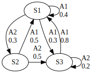
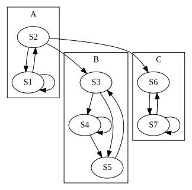
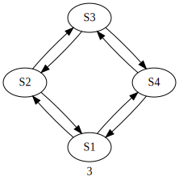

03 Marcov chain
マルコフ的情報源
これまでに扱ったものは実際問題として求めるのは非常に困難です
加えて,現実の情報源を忠実に表しているのではなく近似をしているに過ぎません
どうせ近似ならばもっと扱いやすいものにした方がよいということで登場するのがマルコフ的情報源です
マルコフ的情報源とはいくつかの内部状態を持った情報源のことです
この内部状態をS1,S2,…,Srで表します
今,Sαにあったとします.すると次の時刻には情報源は確率pβαで状態Sβに遷移し文字Aiを発生します
状態Sαにあるときに文字Aiを発生する確率をqiαとします
今度は状態Sβにいます.このとき確率確率pγβで状態Sγに遷移し,文字Ajを発生します
状態Sβにあるときに文字Ajの出る確率はqjβです
このように逐次確率的に状態を移行しながら文字を発生し発生する文字の確率分布はその時の状態に依存しているような情報源をマルコフ的情報源と言います
マルコフ的情報源は状態遷移図で説明するとわかりやすいです
以下の図は状態がS1,S2,S3の3つであるようなマルコフ的情報源を表す遷移図です
Figure: 図1
- 状態は丸で囲われる
- 状態の遷移の確率は矢印の上に書かれている
という特徴が有ります
図1では
- 状態に関して
- S1からS1になる確率p11は0.4
- S1からS2になる確率p12は0.3
- S1からS3になる確率p13は0.3
- 文字に関して
- S1から遷移する時に文字A1が出る確率は0.7
などがわかります
マルコフ的情報源ではこれから発生する文字の確率分布は現在の情報源の状態だけで定まるので議論がしやすいです
これ以前に紹介した情報源も過去に出たs個の文字の組Ai1Ai2…Aisをひとまとめにしたものを情報源の内部状態と考えることができます
つまりに過去にAi1Ai2…Aisの文字系列が出たということは情報源が今状態Sα=Ai1…Aisにあると見ることができます.次に文字Aiが出る確率qiαは
qiα=p(Ai∣Ai1…Ais)
と書けます
文字Aiが出た後に文字系列にAiが新たに付け加えられ,その代わりに一番古い文字Ai1が削除されるので情報源の状態は
sα=Ai1Ai2…Ais→sβ=Ai2…AisAi
に変わります.この状態遷移の確率pβαは文字Aiの出る確率qiαに等しいです
文字の出現確率が無限の過去を元によるわけではないので,ここではsの値を十分に大きく取ればマルコフ的情報源に近似することができると考えられています
しかし,sが100や1000のように大きな数だと状態が多すぎて確率の計算が大変になってしまいます.あくまで｢理論上｣の話であり,理論上の考察は楽になります
マルコフ連鎖
マルコフ的情報源では過去の影響は全て状態の中に取り入れられるので,状態の推移を調べることが重要です
このように現在の状態に依存して確率的に状態が遷移していく過程のことをマルコフ連鎖と言います
図2のような状態遷移図を持つマルコフ連鎖を例にその性質を考えてみます
Figure: 図2
このマルコフ連鎖は7つの状態から成ります
ここでBという枠に囲まれた状態に落ち込むと外に出ることはできません.このような性質を持つ状態の部分集合をマルコフ連鎖の閉部分集合と言います
B以外にCも閉部分集合です
Bに落ち込んでしまうと外の状態に行くことはできませんが,B内部の状態は相互に行くことができます.このようにお互いにどの状態からどの状態へも行くことのできる閉部分集合のことを,強連結成分と言います
Aに含まれる状態を考えます.始めの状態がAの中にあったとしても,時間が立てばいつかは必ずBかCの中に移ってしまいます.このように状態がいつまでもA内にとどまっている確率が0であるような状態のことを消散部分と言います
マルコフ連鎖の状態は消散部分といくつかの強連結成分に分けられます.図2ではAが消散部分,BとCが閉強連結成分です
マルコフ連鎖で表される情報源を問題として,この情報源から出る情報の統計的性質を調べようとしているので,時間が経てばなくなってしまう消散部分は無視をしても良いでしょう
これからは閉強連結成分のみを考えることにします
マルコフ連鎖では全体が1つの閉強連結成分になっているものを分解不可能と言います.一方,いくつかの部分に分解できるものを分解可能と言います
これからは分解不可能なもののみを扱います
周期的なマルコフ連鎖
分解不可能なマルコフ連鎖にも次の図3のような変わり種があります
Figure: 図3
このマルコフ連鎖は以下のような状態をもちます
- ある状態から出発し,元の状態に帰るループに含まれる枝の数が2の倍数
- 時刻1にS1にいるとき
- 偶数時刻はS2orS4
- 奇数時刻はS1orS3
これを周期的な連鎖と良います
ループの枝の数の最大公約数mを連鎖の周期
公約数がないとき,非周期的なマルコフ連鎖と言います
各状態にどのくらいの頻度で現れるかを調べるために状態感の遷移確率pβαを並べて,遷移確率行列Pを定義します
P=⎣⎢⎢⎡p11⋮⋮pγ1…⋱……pβα⋱…pγα⋮⋮pγγ⎦⎥⎥⎤
と書けます.ただし,β行α列要素はαからβへ移る確率を表します
そして
(p2)βα=γ∑pβγpγα
となります(γは任意の状態)
分解可能で非周期的なマルコフ連鎖では次の補題が成立します
補題
p∞=n→∞limpn
が存在し,p∞は同一の列ベクトルuより成ります.つまり
p∞=[u,u,…,u],u=⎝⎜⎜⎛u1u2⋮ur⎠⎟⎟⎞
このuは
Pu=u∑ui=1,ui≥0
を満たすベクトルで,これより一意に定まります
十分に時間が経てば,どこから出発してもSαである確率はuαであり,この確率を定常確率と言います
分解不可能でも周期的なマルコフ連鎖ではp∞は存在しません
これはpnはnが大きくなると,周期mの振動を起こし収束しないからです.しかし,uは存在し,同じ式から求めることができます
マルコフ連鎖のエントロピー
次にマルコフ的情報源のエントロピーを求めます
今,状態Sαにいるとして,次に出る文字のエントロピーは
Hα(X)=−i∑qiαlogiα
長い時間かかるほどSαにいる確率は定常状態uαになりエントロピーがHα(X)となる確率はuα.よって全体の1文字当たりのエントロピーは
H=α∑uαHα(X)
は,状態がなんであるかわかるという条件での1文字当たりのエントロピー
Hs(X)=−α∑uαqiαlogiα
に等しいです
情報源の冗長度
アルファベットをk個持つ情報源のエントロピーは1文字当たり最大
H0=logk
となります.現実には1文字当たりHのエントロピーしか出していないとすると,
r=H0H0−H
だけの情報を損しています.このrを冗長度と言います
これは無駄なく情報源を用いれば字数がr%節約できるということです
情報源の大数の法則
文字系列x1x2…xNの出現確率をp(x1x2…xN)と書きます
そして,xiが出現するところで,今までにx1x2…xi−1という文字系列が発生したとします.このときxiの発生する確率をp(xi∣…xi−2xi−1)と書きます
このxiを観測することで得られる情報量は
Ii=logp(xi∣…xi−2xi−1)
であり,Iiの期待値をIiˉ(…xi−2xi−1)として
Iiˉ(…xi−2xi−1)=xi∑p(xi∣…xi−2xi−1)Ii=−xi∑p(xi∣…xi−2xi−1)logp(xi∣…xi−2xi−1)
これを更に文字系列…xi−2xi−1について平均したものが情報源の1文字当たりのエントロピー
H=…xi−1∑xi∑p(…xi−1)p(xi∣…xi−1)logp(xi∣…xi−1)
となります.過去の文字系列が全て分かっているとき,これから更に長さNのも時系列x1x2…xNを見て得られる情報量Iは
I=−logp(x1x2…xN∣x∞)
ただし
p(x1x2…xN∣x∞)=p(x1∣x∞)…p(xN∣x∞)
このことから
I=−i=1∑NIi
と書けます
このとき,Iiは全て平均値がHの確率変数です.N個集めるとおおよそNHに等しくなるので
I≃NH
これは確率論の大数の法則に相当します
実際にN文字の系列1つを見て得られる情報量IはちょうどNHにはなリマ千.むしろNを大きくするとNHからは外れてしまいます.しかし1/NはHに近付きます
N1→H
また,どんな小さい正の数εに対してもNを十分大きく取れば実際に観測される文字系列の情報量はほとんど
I≈(H±ε)N
に収まります.そのため今後は近似的にI=NHとします.
ここで,Iは文字系列の出現確率をpとすると
I=−logp
です.そのため
logp≈(H±ε)N
が導けます.長さNのも時系列は全部でkN個ありますが,この文字系列の全体Lを2つの部分L1とL2に分けてみます
長さNのも時系列のうち,出現確率pが
(H−ε)N<−logp<(H+ε)N
すなわち,
∣∣∣∣N−logp−H∣∣∣∣<ε
を満たすものを全体のL1とし,出現確率pが
∣∣∣∣N−logp−H∣∣∣∣≥ε
となるものを全体のL2とします
つまり,L1の方に入文字系列の出現確率は
p≃2−NH
であり,L2の方に入る確率は2−NHよりは小さいです
たとえεを非常に小さく選んでも,Nが十分に大きければL1に属する文字系列ばかりが出てきて,L2に属するものは例外程度とないります.これを定理化すると次のようになります
定理
任意のε>0,δ>0に対して,あるN0が存在し,N≥N0ならL1に属する文字系列の発生する確率を1−δより大きくすることができる
すなわち文字系列の出現確率をpとして
Prob{∣∣∣∣N−logp−H∣∣∣∣≥ε}<δ
この定理はNを十分大きく取ればL2の部分は無視してしまってL1の部分のみを考えても差し支えがないということを述べています.L1に属する系列の出現確率は
p=2−NH
にほぼ等しいので,L1にはほぼ
1÷2−NH=2NH
の文字系列が含まれいてることがわかります.これはNが十分大きい時にL1に含まれている文字系列の総数は2(H+ε)N以下であるということです
アルファベットの文字数をkとして,Lに属する文字列の総数は
kNH0Nlog22H0=2H0N=Nlog2K=logk
であり,H<H0とするとNが大きければ
2H0N≫2HN
だからL2に含まれる文字系列の数はL1に含まれるものよりもずっと大きいです.そのため,その比ほとんど0となりますが,実際に出現するのは数的には圧倒的に少ないL1のものばかりだという性質を示しています
エルゴード性
集団平均と時間平均が等しくなる時,エルゴード的と良い,このような時に上での議論が成り立ちます
この性質,エルゴード性はあるサイコロDをある人P0が1000回振った時と,サイコロDを1000人P1,…,P1000が同時に1回振った時に出る値の平均が変わらないということを表します(サイコロが分裂しない限りありえないですが,あくまで例え話として)
分解可能で非周期的なマルコフ連鎖はエルゴード性を持ち,そのため定常状態を持つのです